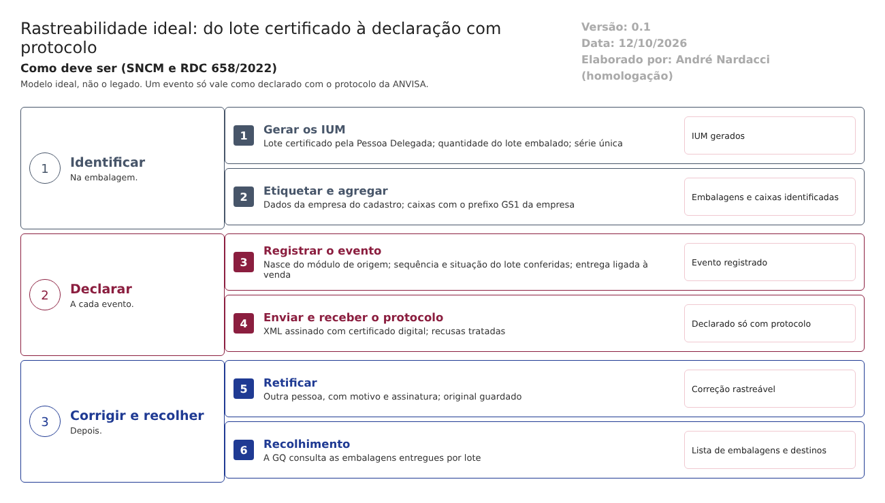

O ideal. Como a Rastreabilidade deve trabalhar para atender à regulamentação do SNCM, à RDC 658/2022 e ao Guia 33/2020. Este documento não descreve o legado. Usa o que foi levantado no código só para mostrar o que manter, o que corrigir e o que construir. Complementa modelo-ideal/01-qualidade-entre-modulos.md, que define as travas entre os módulos. Versão 0.1, de 12/10/2026, para validação com Assuntos Regulatórios e a Garantia da Qualidade.
1. O papel da Rastreabilidade no ERP
A Rastreabilidade dá a cada embalagem um identificador único e conta à ANVISA, com prova, por onde ela passou. É o que permite recolher uma embalagem específica e o que a regulamentação do SNCM exige.
No modelo ideal, a Rastreabilidade não decide nada sobre o lote: ela consulta a situação única do lote, gera os IUM na quantidade embalada e registra os eventos que nascem dos outros módulos (embalagem na Produção, expedição no Comercial e no Estoque). Uma declaração só vale como "enviada" quando a ANVISA devolve o protocolo.
| A Rastreabilidade faz | A Rastreabilidade não faz |
|---|---|
| Gera os IUM do lote certificado, na quantidade embalada, com série única | Liberar o lote (é da Pessoa Delegada, trava 4) |
| Imprime a etiqueta com os dados da empresa vindos do cadastro | Guardar dados da empresa no programa |
| Declara cada evento ao SNCM, assinado, e guarda o protocolo | Dizer "enviado" sem protocolo |
| Liga a entrega à venda e entrega à GQ a lista de embalagens num recolhimento | Abrir ou encerrar recolhimento (é da GQ, trava 11) |
| Corrige uma declaração com motivo, por outra pessoa | Desfazer o que já foi declarado sem registro |
2. Como o trabalho anda

Um evento passa por estas situações, nesta ordem, e cada mudança fica no histórico:
| Situação do evento | Quem leva a ela | O que o sistema confere |
|---|---|---|
| Registrado | O módulo de origem (Produção, Comercial, Estoque) ou o usuário | Sequência dos eventos do IUM; situação do lote; ligação com a venda, na entrega |
| Assinado e enviado | Sistema, com o certificado digital da empresa | Formato aceito pelo SNCM |
| Aceito, com protocolo | Resposta da ANVISA | Só aqui o evento vale como declarado |
| Recusado | Resposta da ANVISA | Motivo da recusa visível; correção e novo envio controlados |
| Retificado | Responsável pelas declarações, com motivo e assinatura | Outra pessoa, que não registrou o evento |
3. As funções da Rastreabilidade ideal
Ação: Manter = o legado já faz como deve; Corrigir = existe, mas não atende; Construir = não existe.
| # | Função | Referência | Ação | Como deve funcionar | No legado hoje |
|---|---|---|---|---|---|
| 1 | Eventos declarados ao SNCM, com protocolo | Lei 11.903/2009 e regulamentação do SNCM | Construir | Envio assinado com o certificado digital da empresa; protocolo guardado; recusas tratadas | Envio simulado |
| 2 | Identificador único por embalagem | Lei 11.903/2009 e regulamentação do SNCM | Corrigir | Série única garantida pelo banco; formato validado; quantidade igual à do lote embalado; código de caixa com o prefixo da empresa | Série sorteada sem conferência; quantidade livre; prefixo de exemplo |
| 3 | IUM e distribuição só de lote certificado | Art. 8º, XV | Corrigir | A geração e cada evento consultam a situação única do lote | Exige só produção "liberada" na Produção |
| 4 | Registro verdadeiro, feito no momento da ação | Art. 124 | Corrigir | "Declarado" só com protocolo; situação dos IUM muda depois da resposta | "Enviado" sem envio |
| 5 | Histórico das alterações, com motivo | Art. 125 | Corrigir | Linha do tempo mantida; motivo obrigatório na retificação e no desfazer da agregação | Linha do tempo existe; motivo opcional |
| 6 | Registros de distribuição para o recolhimento | Arts. 346 e 347 | Construir | A entrega nasce da expedição da venda; a GQ consulta as embalagens entregues por lote | Entrega sem ligação com a venda |
| 7 | Integrações confiáveis | Guia 33, 9.3.2.3 | Corrigir | Uma só gravação por evento; falha avisa; um só lugar para os eventos (sem repetir no Estoque) | Resposta não lida; possível gravação dupla; duas telas |
| 8 | Etiqueta com os dados da empresa titular | Normas de rotulagem (a confirmar) | Corrigir | Dados do cadastro da empresa e do responsável técnico | Dados de outra empresa no código |
4. Integrações com os outros módulos
Todas as integrações seguem o requisito 16 do documento 01: quando falham, avisam e não deixam a operação pela metade.
| Com | A Rastreabilidade recebe | A Rastreabilidade envia | Quando | Trava |
|---|---|---|---|---|
| Produção | Lote embalado e quantidade | IUM gerados | Na embalagem | 4 |
| Estoque | Situação única do lote | — | Na geração e em cada evento | 1 |
| Comercial | Expedição da venda (cliente, lote, quantidade) | Evento de entrega declarado | Na expedição | 11 |
| Garantia da Qualidade | Recolhimento aberto | Lista de embalagens entregues por lote | No recolhimento | 3, 11 |
| ANVISA (SNCM) | Protocolo ou recusa | Eventos assinados | A cada evento | — |
| Principal | Dados da empresa, do responsável técnico, usuários, assinatura | — | Na etiqueta e em cada gravação | — |
5. Quem faz o quê na Rastreabilidade
| Função | Pode | Não pode |
|---|---|---|
| Embalagem (Produção) | Gerar IUM do lote certificado e montar as caixas | Gerar mais IUM do que o lote embalado |
| Expedição | Registrar a saída, ligada à venda | Registrar entrega sem venda |
| Responsável pelas declarações (Assuntos Regulatórios ou GQ) | Acompanhar os protocolos e as recusas; retificar com motivo | Retificar o que ele mesmo registrou |
| Garantia da Qualidade | Consultar as embalagens por lote num recolhimento | Alterar eventos |
A função é conferida no servidor, em toda gravação, e não só na tela (documento 01, requisito 15).
6. O que manter do legado
O que o código mostra que já funciona como deve e vale a pena levar para a nova versão (a confirmar nos testes):
- O modelo de eventos (produção, embalagem e transporte, entrega, recebimento, finalização) e os tipos de cada um, inclusive recolhimento.
- A agregação em caixas, com caixa dentro de caixa, sem repetir IUM.
- A retificação que guarda o evento original ligado ao substituto.
- A linha do tempo de cada IUM.
- A etiqueta com DataMatrix, com os dados do cadastro.
- A geração que só aceita produção liberada, acrescentando a certificação.
7. Pontos para validar com Assuntos Regulatórios e a GQ
- A norma do SNCM em vigor e os prazos que valem para a empresa.
- O certificado digital e o acesso ao serviço do SNCM.
- O formato do IUM e do código das caixas.
- Quem responde pelas declarações e pelas retificações.
- Os dados obrigatórios da etiqueta.
O que a ANVISA pede: textos citados
Texto literal das normas citadas em cada tema, extraído dos arquivos da pasta Documentação/ (RDC nº 658/2022 em português e Guia nº 33/2020) por homologacao/ferramentas/citar_normas_diagnostico.py. "(...)" marca trechos omitidos. No portal, clique na referência de cada tema para ver o texto.
Tema 1 · Eventos declarados ao SNCM, com protocolo
A Lei 11.903/2009 criou o Sistema Nacional de Controle de Medicamentos (SNCM). A regulamentação da ANVISA define os eventos, o formato e os prazos. O documento da equipe cita a RDC 886/2024, que reorganizou o SNCM: confirmar com Assuntos Regulatórios o texto e os prazos em vigor.
Tema 2 · Identificador único por embalagem
O identificador único de medicamento (IUM) e o seu formato são definidos pela regulamentação do SNCM. Confirmar com Assuntos Regulatórios o padrão exigido (GS1, identificadores de cada dado).
Tema 3 · IUM e distribuição só de lote certificado
RDC 658/2022, art. 8º
Art. 8º Um Sistema da Qualidade Farmacêutica adequado à fabricação de medicamentos deve garantir que:
(...)
XV - os medicamentos não sejam comercializados ou distribuídos antes da Pessoa Delegada pelo Sistema de Gestão da Qualidade Farmacêutica ter certificado que cada lote do produto foi produzido e controlado de acordo com os requerimentos de registro e quaisquer outras normas relevantes à produção, ao controle e à liberação de medicamentos;
(...)
Tema 4 · Registro verdadeiro, feito no momento da ação
RDC 658/2022, art. 124
Art. 124. Os registros devem ser realizados ou completados sempre que uma ação for realizada e de modo a permitir que todas as atividades significativas relativas à fabricação de medicamentos sejam rastreáveis.
Tema 5 · Histórico das alterações, com motivo
RDC 658/2022, art. 125
Art. 125. Toda a alteração feita no registro de um documento deve ser assinada e datada, devendo permitir a leitura da informação original.
Parágrafo único. Quando apropriado, o motivo da alteração deve ser registrado.
Tema 6 · Registros de distribuição para o recolhimento
RDC 658/2022, art. 346
Art. 346. Os registros de distribuição de lote/produto devem estar prontamente disponíveis para as pessoas responsáveis pelo recolhimento.
RDC 658/2022, art. 347
Art. 347. Os registros de distribuição devem conter informações suficientes sobre atacadistas e clientes diretamente abastecidos, mesmo quando se trate de produtos exportados e amostras médicas.
Tema 7 · Integrações confiáveis
Guia nº 33/2020, item 9.3.2.3 (Requisitos Operacionais)
Dados – requisitos relacionados ao manuseio de dados, considerando-se o seu impacto na segurança do paciente, na qualidade do produto e na integridade dos dados, abrangendo os seguintes pontos: - Definição dos registros eletrônicos; - Definição dos tipos de dados, incluindo a identificação das características, formatação, parâmetros críticos, intervalo e formato de datas válidos, limites e exatidão e assim por diante; - Onde e como os dados serão gravados (ex.: bancos de dados relacionais, arquivos criptografados etc.) - Campos necessários; - Migração de dados (importação e exportação); - Entrada de dados e subsequente edição; - Backup e recuperação; - Requisitos para arquivamento; - Segurança dos dados e integridade.
Interfaces – devem ser definidas (se aplicável), abrangendo os seguintes pontos: - Interface(s) com o usuário – definidas em termos de níveis de acesso (operador, administrador, gerente do sistema) ou funções quando apropriado; - Interface(s) com outros sistemas; - Interface(s) com equipamentos, tais como sensores ou atuadores. Isto pode incluir listas de I/O (entrada e saída) para sistemas utilizados para controle de processos; - Forma de entrada e saída de dados pelos usuários (ex.: teclado, leitor de código de barras, impressoras etc.).
Tema 8 · Etiqueta com os dados da empresa titular
A rotulagem de medicamentos (razão social, CNPJ, endereço, responsável técnico e SAC do titular do registro) é definida por norma própria da ANVISA, que não está na pasta Documentação. Confirmar com Assuntos Regulatórios.